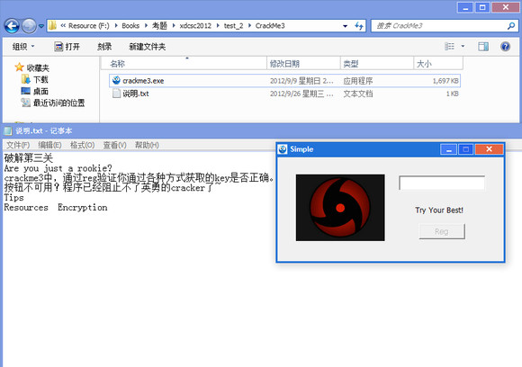
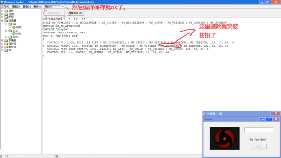
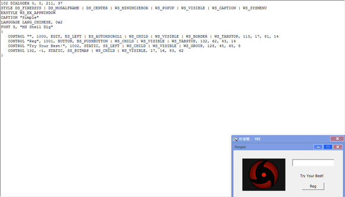
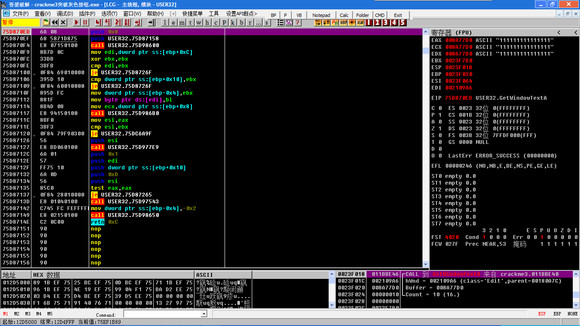
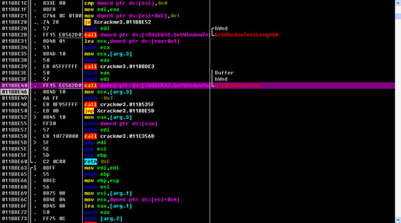
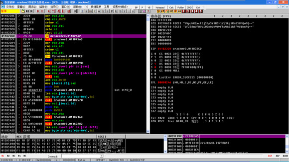
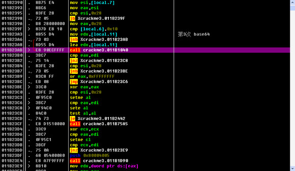
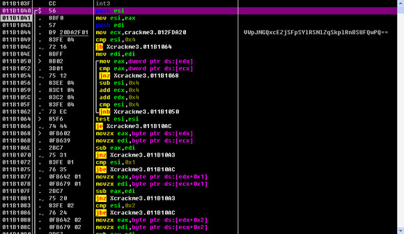
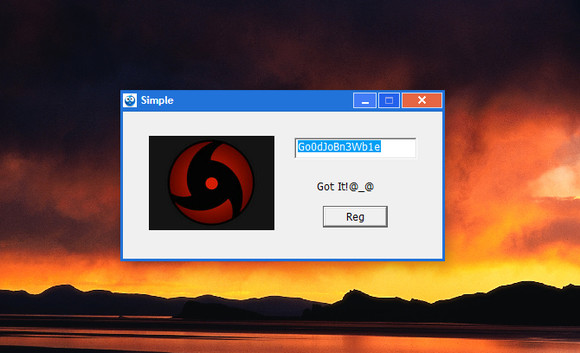

西电第三届网络攻防大赛线上赛破解题目第三关
Contents
昨天有少年留言，要搞第三题，那我还是写一下三题吧。
开搞



第二步：上OD
下GetWinodwTextA，命令就是bp GetWinodwTextA 然后随便我们输入1111111111111111111111，然后点Reg，程序断下了来了：





好了，我再屡屡思路。
- 我们输入的是111111111111111
- 中途调试的时候在堆栈和寄存器里有没有看到这样的东西
- MTExMTExMTExMTExMTEx
- TVRFeE1URXhNVEV4TVRFeE1URXg=
- VFZSRmVFMVVSWGhOVkVWNFRWUkZlRTFVUlhnPQ==
- 其实一眼就能看出是base64
- base64（111111111111111）=MTExMTExMTExMTExMTEx
- base64（MTExMTExMTExMTExMTEx）=TVRFeE1URXhNVEV4TVRFeE1URXg=
- base64（TVRFeE1URXhNVEV4TVRFeE1URXg=）=VFZSRmVFMVVSWGhOVkVWNFRWUkZlRTFVUlhnPQ==
- 为神马程序要我们把输入的假码这样变换呢？
- base（base（base（我们输入的价码））），上面那个图，继续分析就知道了，他是要和
- VWpJNGQxcEZjSFpSYlRSNlZqSkplRnBSUFQwPQ==每一位做比较。
- 所以我们得key就是VWpJNGQxcEZjSFpSYlRSNlZqSkplRnBSUFQwPQ== 进行3次base64解码
- 我们都知道base64是一个可逆的算法，所以我们正确的key就是：
- key=base64-¹(base64-¹(base64-¹(VWpJNGQxcEZjSFpSYlRSNlZqSkplRnBSUFQwPQ==)))
- 到百度找一个base64解密工具
- key=Go0dJoBn3Wb1e
- ok就这么多了，同学你明白了吧！

Author KoU2N
LastMod 2013-05-17